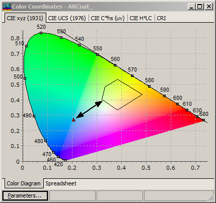
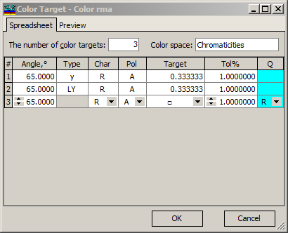
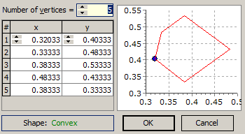

Color Range Targets
Color Range Target are specialized targets described by a convex polygon. Range Color Targets are available for the following color spaces: Chromaticity, CIE YU’V’ 1976, CIE YU’V’ 1960, Hunter Lab, CIE L*a*b*, and CIE L*u*v*. Starting with version 11.65, polar color coordinates are also supported by this option.

When a Range qualifier is selected, the Type field of the Color Target editor becomes gray. This indicates that the corresponding value has no meaning with the Range qualifier.

Additionally, instead of Target value, a special rectangle symbol appears. The arrow to the right invokes a popup editor.

At the left side of the dialog, it is possible to specify the number of vertices in the polygon (minimum number is 3) and a set of x, y vertices coordinates. During editing, the polygon is always checked for convexity, and the result is displayed at the bottom left part of the dialog. Starting with v. 11.65, concave polygons are also allowed as range color targets.
The right pane of the dialog represents the shape of the polygon during the editing session, with the vertex being edited highlighted with a small blue circle. After pressing the OK button, the current polygon will be stored in the Color Target.